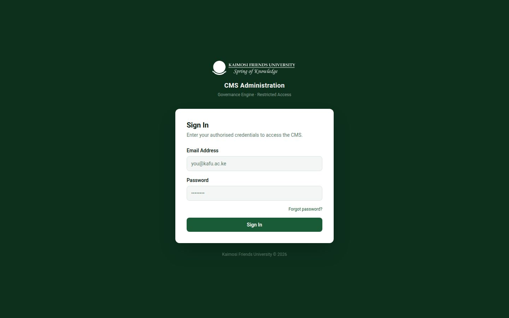
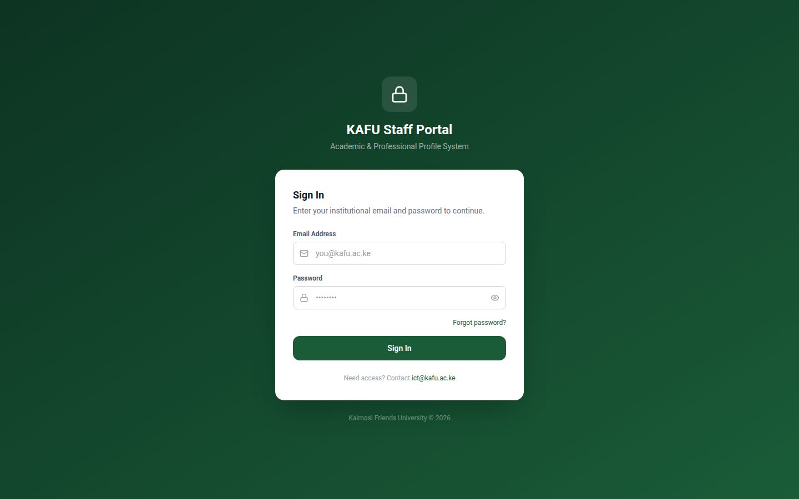

Kaimosi Friends University operates three integrated digital systems that together power the official university website at www.kafu.ac.ke.
| System | Who Uses It | Purpose |
|---|---|---|
| CMS Administration | Communications team, ICT, Reviewers, Administrators | Create, edit, approve and publish all website content — news, events, programmes, research, staff profiles, governance information, and site configuration. |
| Staff Account Updater Portal | All academic and administrative staff | Update personal academic profile information (biography, qualifications, publications, research interests) for display on the university website. |
| KAFU Website (Public) | General public, students, staff | The live website. Displays all approved and published content from the CMS. No editing happens here. |
| System | URL | Who Can Request Access |
|---|---|---|
| KAFU Website | www.kafu.ac.ke | Public — no login required |
| CMS Administration | cms.kafu.ac.ke | Authorised staff only — contact ICT (ict@kafu.ac.ke) |
| Staff Portal | portal-update.kafu.ac.ke | All permanent & contract staff — contact ICT |
The CMS uses four roles. Each role has carefully scoped access to prevent accidental changes to sensitive content.
| Role | Label | What They Can Do |
|---|---|---|
| Super Admin | Super Admin | Full access to everything — all content, all settings, user management, site configuration, redirects, branding, and governance data. Typically 1–2 people in ICT. |
| ICT Admin | ICT Admin | Same as Super Admin except cannot manage other Super Admins. Handles technical configuration, site controls, user accounts, and all content modules. |
| Comms Admin | Communications Admin | Creates and edits all content types, manages media, news, events, research, and governance data. Cannot access system settings or user management. |
| Reviewer | Reviewer | Reviews submitted content in the Review Queue. Can approve or request revisions. Cannot create new content or change settings. |

Open your browser and go to cms.kafu.ac.ke. You will see the CMS Administration sign-in page with the KAFU logo.
Type your KAFU email address in the format you@kafu.ac.ke. This is the same email registered with ICT when your account was created.
Type your password. If you have forgotten it, click Forgot password? to receive a reset link by email.
You will be taken to the Dashboard. The sidebar on the left shows your available modules based on your role.
After logging in, the Dashboard provides an at-a-glance view of the CMS health and pending work. It contains four key widgets:
| Widget | What It Shows |
|---|---|
| Content Health | A ring-gauge score (0–100) indicating overall website content quality. Below it are alerts for stale, expired, or overdue content items. Click any alert to jump directly to the affected content. |
| Workflow Pipeline | A count of content items at each workflow stage: Draft, Submitted, Under Review, Approved, Scheduled, Published. Helps you identify bottlenecks at a glance. |
| Site Operations | Quick-action buttons for the most common tasks: New Content, View Published, Manage Media, Review Queue, Navigation Manager, and Redirects. |
| Recent Activity | A log of the latest content changes across the system — who edited what and when. |
The Content Library is the central list of all website content items. Access it from the sidebar under Content.
Use the filter bar at the top of the library to narrow down what you see:
| Column | Meaning |
|---|---|
| Title | The name of the content item. Click to open the editor. |
| Type | The content category (News, Event, etc.) |
| Status | Current workflow stage (see Section 7) |
| Author | Who created the item |
| Modified | When it was last edited |
| Published | When it went live (if applicable) |
| Actions | Edit, Preview, Publish, Archive buttons |
Every piece of content in the CMS goes through a defined lifecycle before it appears on the public website. Understanding these stages is essential for all CMS users.
| Status | What It Means | Who Acts Next |
|---|---|---|
| Draft | Content is being written. Not visible to public. Only the author and admins can see it. | Author — continues editing, then submits |
| Submitted | Author has marked it ready for review. Waiting for a Reviewer to pick it up. | Reviewer — moves to Under Review |
| Under Review | A Reviewer is actively checking the content for accuracy, formatting and policy compliance. | Reviewer — either Approves or Requests Revision |
| Approved | Content is approved and ready to go live. Admin can publish immediately or schedule for a future date. | Admin — publishes or schedules |
| Scheduled | Set to publish automatically on a future date and time. | System — auto-publishes at set time |
| Published | Visible to the public on www.kafu.ac.ke. | Admin — can unpublish or archive |
| Unpublished | Was published but has been temporarily removed from public view. Content is preserved. | Admin — can re-publish or archive |
| Archived | Permanently removed from the website. Still stored in the CMS for records. Cannot be un-archived automatically. | Admin only |
The Content Editor opens whenever you click an item in the Content Library or click New Content. It is divided into several panels:
graduation-ceremony-2026). Edit only if needed.Every time you save, the CMS creates a revision. You can view and restore any previous version from the Revisions panel on the right side of the editor. This makes it safe to make changes — nothing is permanently lost.
The Review Queue collects all content items with status Submitted or Under Review. It is the primary workspace for Reviewers.
Available to: Super Admin ICT Admin Comms Admin Reviewer
Click Review Queue in the left sidebar. Items are listed by age — oldest first so nothing is forgotten.
Click Start Review on any Submitted item. Its status changes to Under Review and it is now assigned to you.
Check for accuracy, grammar, policy compliance, appropriate imagery, and SEO quality. Use the Preview button to see how it will look on the live website.
If the content meets standards, click Approve. The item moves to Approved and can be published. If changes are needed, click Request Revision, enter your feedback, and the author is notified.
The Media Library stores all images, PDFs, and documents used across the website. Access via Media Library in the sidebar under the Media section.
Drag and drop files into the upload zone, or click to browse. Supported: JPG, PNG, WebP, PDF, DOCX, XLSX.
For images, add an Alt Text (required for accessibility). For documents, add a title and description.
The file is stored and immediately available to use in any content item.
| Type | Recommended Size | Max File Size |
|---|---|---|
| Hero / Banner images | 1920 × 800 px | 2 MB |
| News / Event thumbnails | 1200 × 630 px | 1 MB |
| Staff profile photos | 400 × 400 px (square) | 500 KB |
| Gallery photos | 1600 × 1200 px | 3 MB |
| Documents (PDF) | — | 20 MB |
Manages the university's research information displayed at /research on the public website. Access via Research Office in the sidebar.
| Sub-section | What You Manage |
|---|---|
| Themes | Broad research areas and priority themes of the university |
| Projects | Active and completed research projects with investigators, timelines, and funding |
| Publications | Journal articles, books, conference papers published by KAFU researchers |
| Grants | Research grants — funding body, amount, period, and status |
| Partners | Research partner institutions and collaborative networks |
Manages the international section of the website at /international. Access via International Office in the sidebar.
| Sub-section | What You Manage |
|---|---|
| Partnerships | Partner universities and international organisations |
| Exchange Programmes | Student and staff exchange opportunities |
The repository stores academic work — theses, dissertations, reports, and papers. Access via Institutional Repository in the sidebar.
This section manages staff academic profiles that appear in the Staff Directory at /staff on the public website. Access via Academic Profiles in the sidebar.
| Sub-section | Purpose |
|---|---|
| Staff Profiles | View and edit individual staff academic profiles. Each profile includes bio, qualifications, research, teaching, and contact details. |
| Staff Content | Shortcut to the Content Library filtered for Staff Profile content type. |
| Submission Review | Queue of staff profile updates submitted through the Staff Account Updater Portal (awaiting admin approval before publishing). |
| Staff Accounts | Manage staff portal user accounts — create accounts, reset passwords, deactivate users. |
Manages leadership and governance information displayed across the website. Access via Governance in the sidebar. Only Admins can edit governance data.
| Sub-section | What It Controls on the Website |
|---|---|
| University Council | Council member profiles at /about/council |
| VC Office | Vice-Chancellor and Deputy VC profiles at /about/vice-chancellor |
| Management Board | University Management committee members at /about/management |
| Directorates | Directorate listings and contacts at /directorates |
| Departments | Academic department details linked from Schools pages |
| Strategic Plan | Strategic plan document and summary at /about/strategic-plan |
| Policies & Regulations | Policy documents at /about/policies |
| Service Charter | Service delivery standards at /about/service-charter |
Manages the Schools, Faculties, and Programmes listed on the website. Access via Academic Structure in the sidebar.
Manages content displayed in the Admissions section of the website. Access via Admissions in the sidebar.
| Sub-section | Purpose |
|---|---|
| Document Uploads | Upload forms, application documents, and requirement checklists visible to applicants |
| Fees & Payments | Manage the fee structure tables displayed on /admissions/fees |
| Postgraduate Programmes | Postgraduate-specific admission information |
| Eligibility Settings | Configure minimum requirements and cutoff points for each programme category |
Site Controls allow admins to configure global website settings without touching code. Access via Site Controls in the sidebar under Site Controls group.
Edit the hero section text, admissions banner message, university statistics (student count, staff count, programmes), and the quick-links grid on the homepage.
Switch on a site-wide coloured banner at the top of every page for urgent announcements (e.g., exam postponements, campus closures). Set the message and expiry time, then toggle it on or off without any code change.
A scrolling ticker below the navbar showing rotating short announcements. Can be toggled independently of the Emergency Banner.
Temporarily replace the entire public website with a maintenance page. Only logged-in CMS users see the live site while maintenance mode is active.
Update the university's Facebook, Twitter/X, YouTube, LinkedIn, and Instagram URLs. These appear in the website footer and share buttons.
Edit the copyright notice, address block, and disclaimer text shown in the website footer.
The Navigation Manager controls the menus displayed on the public website. Changes take effect immediately when saved. Access via Site Controls → Navigation Manager.
It has three tabs:
Manages the main navigation bar (Home, About, Academics, Departments, Admissions, Students, News, Media, Research, Directorates, Contact). Each item has a type:
| Type | Description |
|---|---|
| Plain Link | A simple top-level link with no dropdown (e.g. Home, Contact). |
| Mega Menu | A wide dropdown with grouped columns. You can add multiple groups, each with a heading and a list of links. Set the panel width and number of columns (2, 3, or 4). Add optional footer quick-links at the bottom of the panel. |
| Departments (auto) | Automatically generates a mega-menu from the Schools and Departments database. No manual editing needed. |
Locate the top-level nav item (e.g. "Admissions") in the Primary Navigation list.
Ensure the type selector shows "Mega Menu".
Click the green "X groups" button to expand the group editor.
Add, rename, or remove groups. Within each group, add or remove individual links (label + URL). Tick "External" for links that open outside the KAFU website.
Click Save Changes at the top or bottom of the page. The live website reflects changes immediately.
Manages the top utility bar links — currently Student Portal, E-Learning, and Staff Login. Edit labels and URLs here.
Manages the link columns in the website footer. Add or remove groups (columns) and their individual links.
Create URL redirect rules to forward old or shortened URLs to their correct destinations. Access via Site Controls → Redirects.
Example use cases: /apply → /admissions/apply, or an old news URL pointing to a new one after a page rename.
| Field | Description |
|---|---|
| From (Source) | The old URL path (e.g. /courses). Must start with /. |
| To (Destination) | The new URL or external link (e.g. /programmes or https://...) |
| Type | 301 = Permanent (tells search engines to update their index). 302 = Temporary. |
| Active | Toggle to enable or disable the redirect without deleting it. |
The Content Health page provides a full audit of your website content quality. Access via Site Controls → Content Health.
The Workflow Console gives a unified view of all content items by workflow stage. Access via Site Controls → Workflow.
Unlike the Review Queue (which shows only items awaiting review), the Workflow Console shows every item at every stage. It is useful for administrators who want to see what is in progress across the whole CMS at any given time, identify items that have been sitting in a stage for too long, and take bulk actions.
Manage CMS user accounts. Access via Users in the sidebar. Available to: Super Admin ICT Admin only.
Opens a form for the new account.
Use the staff member's institutional KAFU email address.
Choose the appropriate role (see Section 3). When in doubt, assign Reviewer — it is the most restricted role and additional access can be granted later.
The user will be prompted to change this on first login.
The account is created. Inform the user of their email and temporary password.
Click the Edit button next to any user to change their name, role, or department. To remove access, deactivate the account — this prevents login without deleting the user's content history.
The Taxonomy Manager controls the tags and categories that classify content. Access via Taxonomy Manager in the sidebar.
Tags help users find related content through filters and search. Common taxonomies include: School, Programme Level, Research Theme, News Category, Event Type.
The Audit Log records every action taken in the CMS — who did what, and when. Access via Audit Log in the sidebar. Available to Admins only.
Use the Audit Log to:
The Settings section allows configuration of global site identity and branding. Access via Settings in the sidebar. Admins only.
| Setting | What It Controls |
|---|---|
| Site Name | The name used in browser tabs and email notifications |
| Site Logo | The primary logo displayed in the navbar and emails |
| Favicon | The small icon in browser tabs |
| Brand Colours | Primary (Forest Green) and Accent (Gold) colour codes — change only with approval from Communications |
| Contact Email | The default contact email displayed site-wide |
| Permissions Matrix | Fine-grained control over which roles can perform specific actions on specific content types |
The Staff Account Updater Portal is the system through which all KAFU academic and administrative staff maintain their profiles on the university website. Your profile appears in the Staff Directory at www.kafu.ac.ke/staff and on your individual profile page.

Send an email to ict@kafu.ac.ke with your full name, staff ID number, department, and institutional email address.
ICT will create your account and send you a temporary password by email.
Go to the Staff Portal URL, enter your institutional email and the temporary password, then follow the onboarding steps.
The first time you log in, the portal will walk you through two mandatory setup steps before you can access your profile:
The Profile Editor is organised into seven tabs. Work through each tab, fill in the relevant information, and click Save Section before moving to the next tab. You do not need to complete all sections in one session — your progress is saved automatically.
A completeness percentage is shown for each section at the top of the editor. The system requires a minimum overall completeness before you can submit your profile for review.
Your basic identity information displayed on your staff profile page.
| Field | Notes |
|---|---|
| Full Name | Enter as it should appear on the website (e.g. Dr. Jane A. Wanjiku) |
| Title | Prof., Dr., Mr., Mrs., Ms., etc. |
| Designation | Official job title (e.g. Lecturer, Senior Lecturer, Associate Professor) |
| Department | Select your home department from the dropdown |
| School | Auto-populated from your department selection |
| Profile Photo | Upload a clear professional headshot (square, minimum 400×400px). No backgrounds with busy patterns. |
| Academic Identifiers | Optional but recommended: ORCID iD, Google Scholar URL, Scopus Author ID |
A narrative description of your academic background and expertise. This is the first text visitors read on your profile page.
| Field | Notes |
|---|---|
| Short Biography | 2–3 sentences suitable for introduction at events and events programmes (max 300 characters) |
| Full Biography | Detailed academic biography covering career history, areas of expertise, and notable achievements (300–600 words recommended) |
| Research Interests | Comma-separated list of your main research areas (e.g. Machine Learning, Precision Agriculture, Data Analytics) |
Your academic degrees and professional certifications.
| Field | Notes |
|---|---|
| Degree | e.g. PhD in Computer Science, MSc in Education, Bachelor of Commerce |
| Institution | Name of the awarding university or institution |
| Year Awarded | Year of graduation or certification |
Add as many qualifications as you have. Click + Add Qualification for each additional degree.
Courses and units you currently teach or have recently taught.
| Field | Notes |
|---|---|
| Course Name | Full course title as it appears in the prospectus |
| Course Code | e.g. BSCCS301 |
| Programme / Level | Which programme and study level this course belongs to |
| Semester | When you teach it (e.g. Semester 1, Year-round) |
Your active research work and academic outputs.
| Sub-section | What to Enter |
|---|---|
| Publications | Journal articles, book chapters, conference papers. Include title, journal/venue, year, co-authors, and DOI/URL if available. |
| Ongoing Projects | Active research projects. Include title, funding body, start date, and brief description. |
| Grants | Research grants awarded. Include funding body, amount (optional), period. |
| Supervision | Current PhD/MSc students you are supervising. Include student name and thesis title. |
Contact details displayed on your public profile.
| Field | Notes |
|---|---|
| Office Location | Building name and room number (e.g. SCIT Block, Room 202) |
| Office Phone | Extension or direct line (e.g. +254 777 373 633 Ext. 204) |
| Institutional Email | Pre-filled from your account. Cannot be changed here — contact ICT. |
| Personal/Alternate Email | Optional secondary email for students to reach you |
| Office Hours | When you are available for student consultations (e.g. Mon & Wed 2:00–4:00 PM) |
Upload supporting documents for your profile.
| Document | Purpose |
|---|---|
| Curriculum Vitae (CV) | Your most recent academic CV in PDF format. The portal can also extract information from your CV to pre-fill other sections — click "Pre-fill from CV" after uploading. |
| Certificate Copies | Scanned copies of degree certificates (for internal verification — not displayed publicly) |
| Other Documents | Any other supporting documents requested by your department or HR |
Once you have filled in all sections to the minimum required completeness level, the Submit for Review button becomes active.
Review the completeness indicators at the top of the editor. All sections should be at least partially complete. Sections with red indicators need attention.
Make sure you have clicked Save Section in every tab. Unsaved changes are not included in the submission.
A confirmation dialogue appears. Read the consent statement — by submitting you confirm the information is accurate and you consent to it being displayed on the public university website.
Click Confirm & Submit. Your profile status changes to Submitted and the CMS Review Team is notified.
You can track the status of your profile submission on the Submission History page in the portal (accessible from the sidebar or top navigation).
| Status | What It Means | What You Should Do |
|---|---|---|
| Draft | You are still editing. Profile has not been submitted. | Continue filling in your profile sections, then submit when ready. |
| Submitted | Your profile has been sent to the review team. Awaiting assignment. | Wait. The review team will process submissions within 3–5 working days. |
| Under Review | A reviewer is actively checking your submission. | Wait. You may be contacted by email if the reviewer has quick questions. |
| Revision Requested | The reviewer has identified issues and returned the submission to you with feedback. | Read the reviewer's notes carefully. Make the requested changes in the relevant sections, then resubmit. |
| Approved | Your profile has been approved. It will be published to the website shortly. | No action needed. Your profile will appear live within 24 hours. |
Staff profile submissions come into the CMS via Academic Profiles → Submission Review. This queue lists all pending staff portal submissions.
Navigate to Academic Profiles → Submission Review in the CMS sidebar. You will see a list of staff members who have submitted profile updates, with the submission date and their department.
Click the staff member's name to open a side-by-side comparison: the current live profile on the left and the proposed changes on the right. Changes are highlighted.
Check: factual accuracy (verify qualifications where possible), professional tone of the biography, appropriate profile photo, valid URLs for publications and identifiers, no personal contact details outside the Contact section.
If all information is correct and appropriate, click Approve. The updated profile will be published to the website. If changes are needed, click Request Revision, type your feedback in the notes field (be specific — tell the staff member exactly what to fix), and click Send Back. The staff member receives a notification.
| Issue | Contact | How |
|---|---|---|
| Cannot log in / forgotten password | ICT Directorate | Email ict@kafu.ac.ke or visit ICT offices at SCIT Block |
| New user account request (CMS or Staff Portal) | ICT Directorate | Email ict@kafu.ac.ke with staff details and required role |
| Content corrections on the live website | Communications Office | Email communications@kafu.ac.ke |
| Reporting incorrect information on a staff profile | Human Resources | Email hr@kafu.ac.ke with the staff member's name and the specific error |
| Technical errors or system crashes | ICT Directorate | Email ict@kafu.ac.ke with a screenshot of the error message |
| Training and system guidance | ICT Directorate | Request a training session via ict@kafu.ac.ke |
KAIMOSI FRIENDS UNIVERSITY — Spring of Knowledge
KAFU Digital Systems Training Manual v1.0 | Prepared by ICT Directorate | June 2026
P.O Box 385–50309, Kaimosi, Kenya | ict@kafu.ac.ke | +254 777 373 633
This document is for internal training purposes. For the latest version, contact the ICT Directorate.